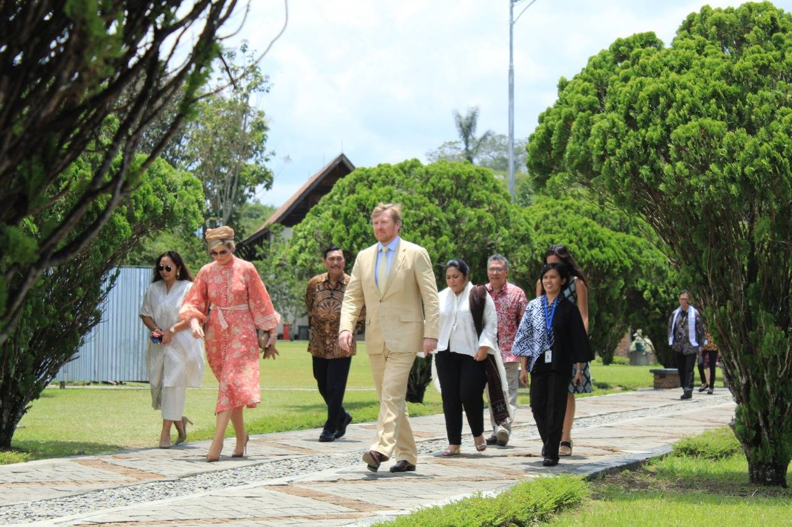
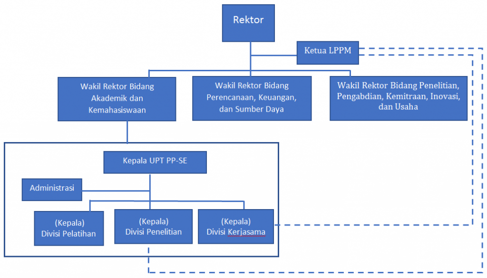
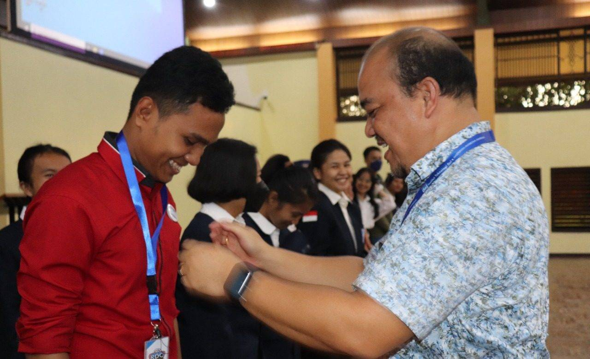

Institut Teknologi Del (IT Del) menjalin kerja sama dengan beberapa mitra, seperti
Konsorsium EASTEM, Uppsala University di Swedia, Ho Chi Minh City University of
Technology and Education, Chiang Mai University, Ministry of Education and Training
(MOET) di Vietnam, Universitas Udayana, Pusat Riset Ekologi dan Etnobiologi BRIN, serta
PT Telkomsel.
IT Del juga terlibat dalam berbagai bidang kerja sama, termasuk pendirian Innovation Hub
atau Toba Digital Valley (TDV), pelaksanaan magang untuk mahasiswa IT Del, pertukaran
pengetahuan, dan rekrutmen lulusan IT Del untuk bekerja di PT Telkomsel.
Selain itu, IT Del pernah menjalin kerja sama dengan institusi lain, seperti Universitas
Pelita Harapan, Dekan Fakultas Sains, Punguan Parsadaan Guru Ni Laingan Siregar
Se-Indonesia, Universitas Esa Unggul, Hutahaean, dan Pemerintah Kabupaten.
Berita 2
No
Gambar
Judul
Deskripsi
1

Lembaga Penelitian dan Pengabdian Masyarakat (LPPM)
Lembaga Penelitian dan Pengabdian Kepada Masyarat Institut Teknologi Del (LPPM IT Del)
pada 20 September 2019 menyelenggarakan “Pelatihan Penulisan Proposal Pengabdian kepada
Masyarakat” untuk Dosen dan Teaching Assistant di lingkungan IT Del. Seluruh Dosen dan
Teaching Assistant IT Del diundang untuk mengikuti pelatihan ini di GD512 kampus IT Del
.
Pelatihan ini dibuka oleh Wakil Rektor II Dr. Arnaldo Marulitua Sinaga, S.T, M.InfoTech,
pelatihan ini diadakan karena banyak dosen baru dan belum banyak yang memahami tentang
penulisan proposal untuk ”Harapannya 90% peserta pelatihan bisa menulis proposal dengan
baik dan mendapatkan pendanaan untuk melakukan program pengabdian kepada masyarakat di
tingkat nasional” ungkapnya.
Berita 3
No
Gambar
Judul
Deskripsi
1

STRUKTUR ORGANISASI UPT PP-ESTEM DI INSTITUT TEKNOLOGI DEL
A. VISI
Sebagai pusat pengembangan pembelajaran yang unggul dan inovatif, terutama dalam bidang
Sains, Teknologi, Enginering, dan Matematika (STEM) yang berkualitas, efisien, efektif,
produktif, dan akuntabel.
B. MISI
1. Melakukan kegiatan penelitian terkait metode, media, dan sumber belajar yang inovatif dan
berkualitas berbasis konsep STEM serta pengembangan dan penerapannya dalam kegiatan belajar
mengajar di IT Del.
2. Mengembangkan pembelajaran dengan pendekatan yang berpusat pada mahasiswa (SCL-Student
Center Learning) dan menerapkannya dalam kegiatan belajar mengajar di IT Del.
3. Mengembangkan pembelajaran elektronik (e-learning) dan menerapkannya dalam kegiatan
belajar mengajar di IT Del.
4. Melakukan kegiatan pelatihan kepada sivitas IT Del dan pihak eksternal terkait dengan
pembelajaran inovatif berbasis STEM dan SCL.
5. Menjalin kerjasama dengan pihak eksternal seperti pemerintah, institusi pendidikan lain,
dan industri dalam pengembangan dan penerapan pembelajaran inovatif.
C. TUJUAN
1. Meningkatkan kemampuan sivitas dalam melaksanakan pembelajaran inovatif berbasis STEM,
SCL, dan elektronik.
2. Meningkatkan kemampuan lulusan dengan tingkat serapan kerja yang tinggi yang dibutuhkan
oleh industri dan masyarakat.
3. Meningkatkan kemampuan tenaga pengajar di lembaga pendidikan mitra dalam melaksanakan
pembelajaran inovatif berbasis STEM, SCL, dan elektronik.
Berita 4
No
Gambar
Judul
Deskripsi
1

KOMUNITAS - Lewat UKM RDC, Mahasiswa IT Del Asah Minat di Bidang Radio
DELFMRADIO.co.id- Sempat vakum, Unit Kegiatan Mahasiswa (UKM) bernama Radio Club (RDC) di
kampus Institut Teknologi Del kini diaktifkan kembali. Lewat RDC, para mahasiswa bakal
mengasah minatnya di bidang radio. Aktifnya RDC kini ditandai dengan pelantikan pengurus
baru periodisasi 2022-2023 di auditorium IT Del, Rabu, 23 November 2022. Adapun pelantikan
dilakukan langsung oleh Rektor IT Del Arnaldo Marulitua Sinaga didampingi oleh Kepala Humas
IT Del Istas Manalu, Koordinator Bidang Kemahasiswaan IT Del Adrianto, Direktur Del FM Radio
Humasak Simanjuntak dan Stasion Manager Riki M. Eikal. “Dengan ini, pengurus baru UKM RDC IT
Del 2022-2023, resmi dilantik,” ujarnya sambil mengetuk microphone tiga kali, tanda resmi
dilantik.